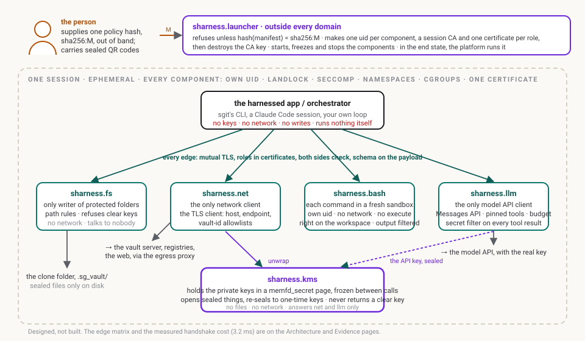
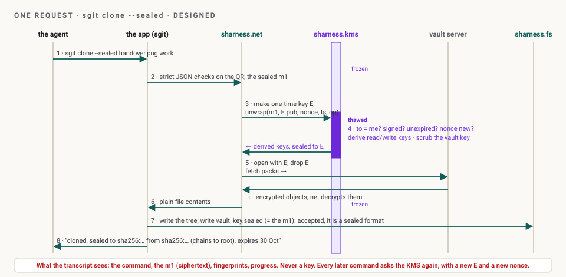
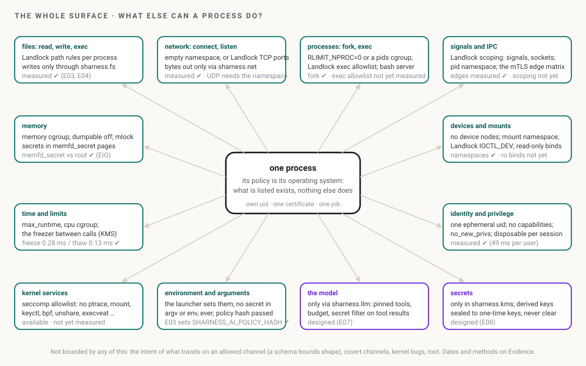

The brief: SHarness in one read
1. What it is, in three sentences
SHarness runs an agent and its tools as a few small, single-purpose processes, each locked down by the kernel and talking to the others only over allowed, mutually authenticated connections. A secret lives in one place, the KMS, which never hands out a clear key; a tricked process can only do its one job. The person, not the agent, supplies the hash of the policy that says what each process may do, so a prompt injection cannot widen it.
It started on 24 October 2026 as a fix for one gap in sgit: a vault key sealed while it travelled and exposed the moment it arrived, on disk, on the command line and in the agent's transcript (Why). Nothing in the fix was specific to sgit.
2. The moving parts

| Part | Its one job | Holds | May talk to |
|---|---|---|---|
| the person | supplies the policy hash sha256:M out of band; carries sealed QR codes | nothing the agent can read | the launcher |
sharness.launcher | refuses unless the manifest hashes to M; makes uids, a session CA, one certificate per role; destroys the CA key; starts, freezes and stops the components | the manifest; no secrets | everything, once, at start |
| the harnessed app / orchestrator | sgit's CLI, a Claude Code session, your own loop: parses, routes, renders | no keys; it sees file contents | fs, net, bash, llm; never kms |
sharness.fs | the only writer of protected folders; refuses anything that parses as a clear key, a private key or a token | no keys | nobody; it answers the app |
sharness.net | the only network client and the TLS client: host, endpoint and vault-id allowlists | derived keys for one command, in a secret page | kms; the outside world |
sharness.bash | runs each shell command in a fresh sandbox under a profile; filters its output | nothing | net, if the profile allows |
sharness.llm | the only client of the model API; pins the tool list; filters secrets out of every tool result; adds the real key | the real API key, obtained sealed | kms; the model API |
sharness.kms | opens sealed things, derives what the caller needs, re-seals it to a one-time key | the private keys, in a memfd_secret page, frozen between calls | net and llm only; no files, no network |
sharness.policy | not a process: the manifest, its layers, its hash |
The edge matrix (who may call whom, deny by default) is on Architecture and as a clickable mockup. Each part in detail is on Components.
3. One request, end to end

sgit clone --sealed, through the parts. The KMS is thawed for one answer and frozen again. The transcript sees the command, ciphertext, fingerprints and progress.Every later command (status, pull, push) repeats steps 3 to 5 with a new one-time key and a new nonce. A read-only command asks with op=read and the KMS returns only the read key, so sharness.net cannot push even if told to. A push needs op=write, which policy may bind to a fresh approval from the person. The protocol, with every check the KMS makes, is on Keys and the KMS.
4. What binds a process: the whole surface
Ask what a process can do at all, and the list is short: files, network, other processes, signals and IPC, memory, time, devices, its identity and privileges, kernel services, its environment and arguments, and, for an agent, the model and secrets. SHarness puts a bound on each one, in the kernel where the kernel can and in a separate component where it cannot. What is left when everything else is limited is the process's own policy: in effect, a small operating system that contains exactly what the policy lists and nothing else.

The full map, with what each bound does not cover, is What a process can do.
5. From a hello world to sgit
The same components, with more of them switched on, cover everything from one child process to a harness-aware application:

sharness-ai hello); the rest are designed. Only P4, sgit, needs code changes, and only where it handles keys.The profiles, the policy each needs, and the map of how sgit's next version stays compatible are on the spectrum.
6. Where it is now
| Rung | What | Status as of 24 Oct 2026 |
|---|---|---|
| browser | the policy hash and edge matrix mockups; three storyboards | published |
| any session | E01 probe (the grant), E02 policy hash (the one value the person supplies) | runnable |
| Linux | E03 run (one command under a policy, Landlock), E04 hello (the acceptance test for one child process) | runnable; E04 measured, 5 of 5 held |
| planned | E05 the edges as a script, E06 the process tree, E07 sharness.llm v0, E08 sharness.kms v0 | in the order on the research note |
| designed | the components under one manifest hash; the launcher above the agent; the platform | the design pages |
No component is built. The whole ladder is on Mockups and experiments; the measurements on Evidence.
7. What there is to decide
- Who runs the launcher. The agent itself (every lock is then a Setting for the agent), a script above it on a laptop (a Boundary), or the platform (a Boundary all the way down). The design wants the third and starts with the second. Roadmap decision 5.
- Claude Code's own sandbox as a layer. It already does for Bash what
sharness.bashwould; should a policy generate its settings rather than compete? Decision 9. - Full split or step 1 in sgit. Whether
sharness.netdoes all vault crypto (the target) or first just filters traffic. Decision 2. - The order of E05 to E08, and whether
sharness.kmsv0 comes beforesharness.llmv0 (the gateway needs the key the KMS holds). Decision 10.
8. Reading order after this page
Why → Architecture → Components → Keys and the KMS → Process Behaviour Policies → the PBP on one page → Agents and LLMs → Enforcing the process tree → Evidence → Roadmap. Then What a process can do, the spectrum, Mockups and experiments, the research note and the market analysis. The source pack is verbatim under the source documents.